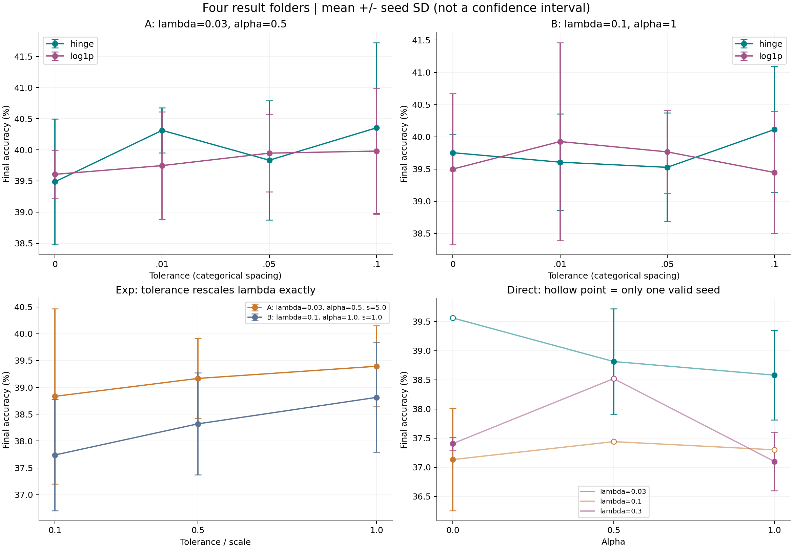
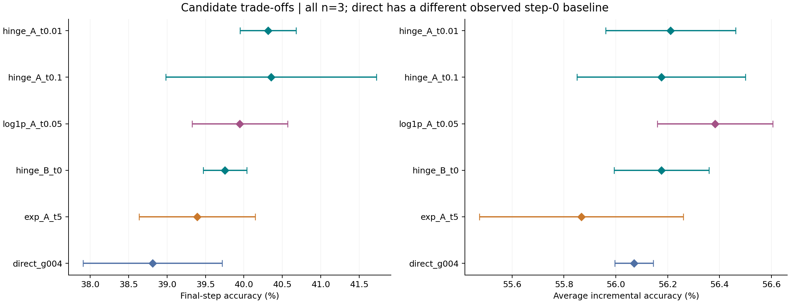

本报告替代此前仅基于 results 顶层 summary 的分析。输入明确限定为 logs_direct、logs_exp_selected、logs_hinge_selected、logs_log1p_selected 四个文件夹各自的 summary.csv/md。未使用顶层 summary，未改动输入文件。
31 个配置、93 个 seed 条目：85 个完整有效结果，8 个 direct 条目因 num_workers 与命令清单不一致被汇总器排除。27 个配置有完整的三个 seed；4 个 direct 配置只有一个有效 seed。汇总排除不意味着训练失败。四个目录仅含汇总文件，本地没有这些目录对应的原始日志。
末阶段指标为 step 9 overall accuracy；AIA 为每个完整 seed 的 step 0–9 简单平均后再跨 seed 平均。所有误差棒是 seed 间样本标准差，不能解释为置信区间或显著性。CSV 均值、标准差、有效 seed 数及 Markdown 数据均已逐项核对。


hinge A/tolerance=.01 是优先的末阶段表现与稳定性候选；log1p A/tolerance=.05 的 AIA 最好，应作为并行候选。hinge A/.1 的末阶段均值只比 A/.01 高 .04 个百分点，方差更大，不能据此认定更好。hinge B/tolerance=0 是较稳定的另一个配置。A/B 同时改变 lambda 和 alpha，exp 还改变 scale，不能将组间差异归因于单一参数。
Exp 的 tolerance 不是硬容忍区间：lambda*s*exp((D-epsilon)/s) = [lambda*exp(-epsilon/s)]*s*exp(D/s)。当前固定 Trust 权重下，epsilon 与 lambda 在目标上可折叠成 lambda_effective。A 组的有效系数依次为 .027145、.018196、.011036；B 组为 .090484、.060653、.036788。B 组减弱约束后三个 seed 的末阶段均改善；A 组平均改善但 seed43 下降。这支持继续分析有效约束强度，不构成 tolerance 越大越好的证明。
Hinge 与 log1p 都仅在 D>epsilon 时有梯度。前者对 margin 的梯度幅度为 1；后者为 1/(1+(D-epsilon)/s)，会降低大 gap 样本的权重。Exp 的幅度为 exp((D-epsilon)/s)，Direct 为 1 且始终作用。两种单侧目标都值得保留：hinge 与 log1p 的胜负随配置和评价指标变化。
在相同的 lambda=.1、alpha=1、scale=1、tolerance=.1 下，hinge 相对 exp 的 FAA/AIA 平均提高 2.3733/1.2223 个百分点，log1p 相对 exp 提高 1.7067/1.0580，均为三个 seed 同向改善。这是优先分析单侧目标的直接依据，但只有三个 seed，不能据此宣布统计显著或普遍优势。log1p A/.05 相对 A/0 的 FAA/AIA 也在三个 seed 上全部提高，均值分别为 .34/.3737 个百分点。
Direct 在 alpha=1 下，将 lambda 从 .3 降至 .03，FAA/AIA 分别提高 1.48/1.9337 个百分点，三个 seed 全部改善。但 alpha=0 的 lambda=.3 相对 .1 在 FAA 上略高、AIA 更低，因此不能宣称所有切片都单调。Direct 中 lambda=.03、alpha=.5 是三个有效 seed 配置中的最佳均值；alpha=0 的同 lambda 配置只有 seed44，不能按其单次 39.56% 排为最佳。固定 lambda=.03，alpha=.5 相对 1 的 FAA 提升主要由 seed43 贡献，alpha 的最佳值仍不明确。
诊断中的 cmr_active 是 D>epsilon 的违反比例，exp/direct 即使 D≤epsilon 仍有梯度；跨 tolerance 比较时，应同时用共同阈值统计 D 的分布，避免把阈值改变误读为表示退化减少。不同 penalty 的原始 loss 数值也不能直接作为约束强度比较，应查看乘上 lambda 和类别权重后的梯度。
| config | lam_cmr | alpha | tolerance | scale | lambda_effective | n | final_accuracy_pct | final_sd_pp | aia_0_9_pct | aia_sd_pp |
|---|---|---|---|---|---|---|---|---|---|---|
| direct_g005 | 0.0300 | 0.0000 | 0.0000 | 1.0000 | — | 1 | 39.5600 | — | 56.0950 | — |
| direct_g004 | 0.0300 | 0.5000 | 0.0000 | 1.0000 | — | 3 | 38.8133 | 0.9043 | 56.0702 | 0.0745 |
| direct_g006 | 0.0300 | 1.0000 | 0.0000 | 1.0000 | — | 3 | 38.5800 | 0.7671 | 55.8055 | 0.5818 |
| direct_g002 | 0.1000 | 0.0000 | 0.0000 | 1.0000 | — | 3 | 37.1333 | 0.8787 | 54.7846 | 0.5995 |
| direct_g001 | 0.1000 | 0.5000 | 0.0000 | 1.0000 | — | 1 | 37.4400 | — | 54.4756 | — |
| direct_g003 | 0.1000 | 1.0000 | 0.0000 | 1.0000 | — | 1 | 37.3000 | — | 54.9152 | — |
| direct_g008 | 0.3000 | 0.0000 | 0.0000 | 1.0000 | — | 3 | 37.4067 | 0.1102 | 54.2118 | 0.0786 |
| direct_g007 | 0.3000 | 0.5000 | 0.0000 | 1.0000 | — | 1 | 38.5200 | — | 54.5746 | — |
| direct_g009 | 0.3000 | 1.0000 | 0.0000 | 1.0000 | — | 3 | 37.1000 | 0.5032 | 53.8718 | 0.3100 |
| exp_A_t0.5 | 0.0300 | 0.5000 | 0.5000 | 5.0000 | 0.0271 | 3 | 38.8333 | 1.6318 | 55.5036 | 0.4950 |
| exp_A_t2.5 | 0.0300 | 0.5000 | 2.5000 | 5.0000 | 0.0182 | 3 | 39.1667 | 0.7490 | 55.7330 | 0.4484 |
| exp_A_t5 | 0.0300 | 0.5000 | 5.0000 | 5.0000 | 0.0110 | 3 | 39.3933 | 0.7548 | 55.8676 | 0.3935 |
| exp_B_t0.1 | 0.1000 | 1.0000 | 0.1000 | 1.0000 | 0.0905 | 3 | 37.7400 | 1.0400 | 54.8864 | 0.7356 |
| exp_B_t0.5 | 0.1000 | 1.0000 | 0.5000 | 1.0000 | 0.0607 | 3 | 38.3200 | 0.9502 | 55.3703 | 0.2997 |
| exp_B_t1 | 0.1000 | 1.0000 | 1.0000 | 1.0000 | 0.0368 | 3 | 38.8133 | 1.0191 | 55.4579 | 0.1675 |
| hinge_A_t0 | 0.0300 | 0.5000 | 0.0000 | 1.0000 | — | 3 | 39.4867 | 1.0092 | 56.0572 | 0.5756 |
| hinge_A_t0.01 | 0.0300 | 0.5000 | 0.0100 | 1.0000 | — | 3 | 40.3133 | 0.3630 | 56.2114 | 0.2505 |
| hinge_A_t0.05 | 0.0300 | 0.5000 | 0.0500 | 1.0000 | — | 3 | 39.8333 | 0.9592 | 56.1509 | 0.0826 |
| hinge_A_t0.1 | 0.0300 | 0.5000 | 0.1000 | 1.0000 | — | 3 | 40.3533 | 1.3684 | 56.1754 | 0.3245 |
| hinge_B_t0 | 0.1000 | 1.0000 | 0.0000 | 1.0000 | — | 3 | 39.7533 | 0.2831 | 56.1763 | 0.1832 |
| hinge_B_t0.01 | 0.1000 | 1.0000 | 0.0100 | 1.0000 | — | 3 | 39.6067 | 0.7516 | 56.0117 | 0.4880 |
| hinge_B_t0.05 | 0.1000 | 1.0000 | 0.0500 | 1.0000 | — | 3 | 39.5267 | 0.8439 | 55.8936 | 0.1000 |
| hinge_B_t0.1 | 0.1000 | 1.0000 | 0.1000 | 1.0000 | — | 3 | 40.1133 | 0.9770 | 56.1087 | 0.0847 |
| log1p_A_t0 | 0.0300 | 0.5000 | 0.0000 | 1.0000 | — | 3 | 39.6067 | 0.3911 | 56.0090 | 0.1772 |
| log1p_A_t0.01 | 0.0300 | 0.5000 | 0.0100 | 1.0000 | — | 3 | 39.7467 | 0.8638 | 56.2080 | 0.3344 |
| log1p_A_t0.05 | 0.0300 | 0.5000 | 0.0500 | 1.0000 | — | 3 | 39.9467 | 0.6214 | 56.3828 | 0.2228 |
| log1p_A_t0.1 | 0.0300 | 0.5000 | 0.1000 | 1.0000 | — | 3 | 39.9800 | 1.0137 | 56.0696 | 0.4928 |
| log1p_B_t0 | 0.1000 | 1.0000 | 0.0000 | 1.0000 | — | 3 | 39.5000 | 1.1729 | 55.9629 | 0.3159 |
| log1p_B_t0.01 | 0.1000 | 1.0000 | 0.0100 | 1.0000 | — | 3 | 39.9267 | 1.5348 | 56.0972 | 0.6333 |
| log1p_B_t0.05 | 0.1000 | 1.0000 | 0.0500 | 1.0000 | — | 3 | 39.7667 | 0.6417 | 55.9262 | 0.1985 |
| log1p_B_t0.1 | 0.1000 | 1.0000 | 0.1000 | 1.0000 | — | 3 | 39.4467 | 0.9488 | 55.9443 | 0.1702 |
已验证本地 24 个 hinge 运行的逐类测试数据与 selected 汇总一致。A/tolerance=.01 相对 A/0 的末阶段平均改善 .8267 个百分点：旧类准确率提高 .8741，新类提高 .4；由于末阶段有 90 个旧类、10 个新类且每类测试数相同，加权贡献分别为 .7867、.04。旧类准确率三个 seed 均改善，新类并非每个 seed 改善。
A/.1 相对 A/.01 的总体均值仅提高 .04：旧类平均提高 .2370，新类平均下降 1.7333，且 seed 间差异大。不能从 overall accuracy 的极小提升推出学习与保留均改善。
Selected exp/hinge/log1p 的相同 seed 在 step0 完全相同；direct 的 step0 不同。前者提供可比性支持，但完整运行参数/代码版本仍需核对。direct 跨方法比较仅作描述，不作为严格的 penalty 单变量因果结论。新未裁剪权重公式也不能由缺少完整参数的这些汇总直接评估。
本地可确认与本次输入对应的完整 metrics/检查点只有 hinge 存档。检查点配合输入特征可以生成预测、混淆矩阵、特征、固定 probe 上的 margin 与梯度。原训练口径还依赖 replay IDs 和当时的教师原型；同 seed 不足以无条件恢复原 memory。只有最佳检查点无法重建所有 epoch 的 Need、历史回放曝光或优化器轨迹。新的 probe 诊断必须标明样本和参照，不冒充原训练统计。
后续保存运行清单、代码版本、类别映射/数据版本、replay IDs、prototype bank、best_epoch、probe IDs 和逐样本预测。所有派生表及输入哈希见同目录 CSV 和 audit.json；reanalyze_selected_results.py 可重新生成本报告。